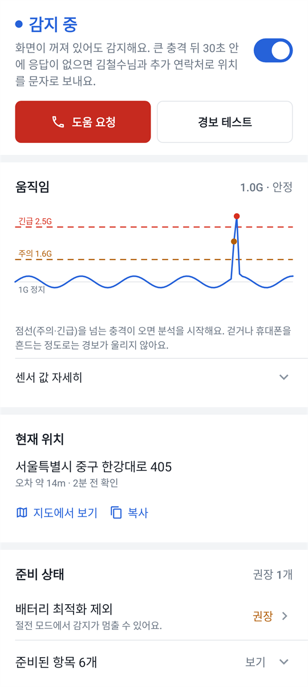
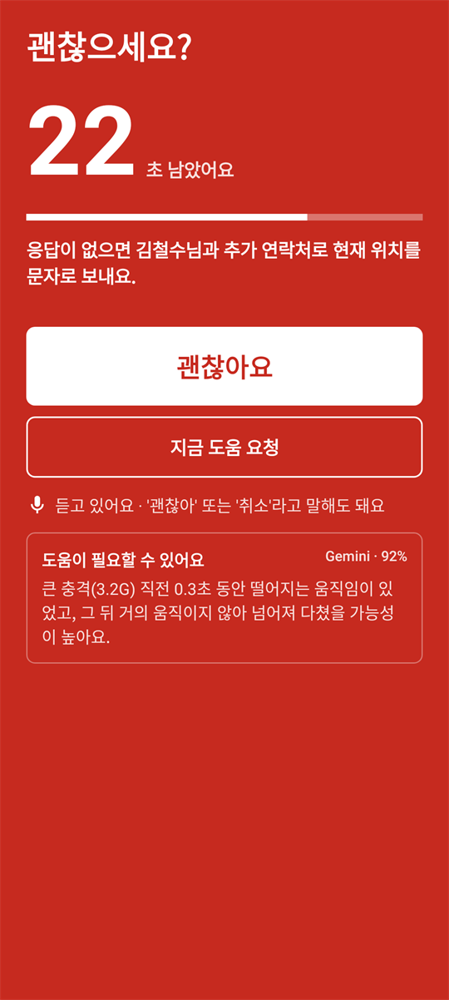
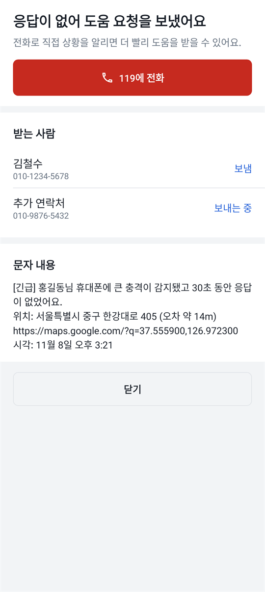

넘어지면
보호자에게 알려 드려요
휴대폰 센서로 넘어짐과 큰 충격을 감지하는 안드로이드 앱이에요. 먼저 괜찮은지 묻고, 응답이 없으면 보호자에게 지금 있는 곳을 문자로 보내요.
- 다운로드가 끝나면 알림에서 ai-shock-alert.apk를 눌러요.
- "출처를 알 수 없는 앱" 안내가 나오면 '이 출처 허용'을 켜요.
- '설치'를 누르면 끝이에요. 자세한 설치 방법
안드로이드 휴대폰 카메라로 QR 코드를 찍으면 이 페이지가 열려요. 거기서 '설치 파일 내려받기'를 누르면 돼요.
안드로이드 휴대폰 전용 앱이에요. 설치할 휴대폰으로 이 페이지 링크를 보내 주세요.
- 화면이 꺼져 있어도 감지해요
- 인터넷이 없어도 동작해요
- 기록은 휴대폰 안에만 저장돼요

동작 방식
휴대폰을 몸에 지니고 있기만 하면 돼요.
-
1단계
큰 충격 감지
떨어지는 움직임, 충격 크기, 충격 뒤 자세와 움직임을 함께 봐요. 화면이 꺼져 있어도 감지해요.
-

2단계
괜찮은지 확인
경보음과 진동으로 30초 동안 물어요. '괜찮아요'를 누르거나 "괜찮아"라고 말하면 꺼져요.
-

3단계
보호자에게 알림
응답이 없으면 보호자에게 주소와 지도 링크가 담긴 문자를 보내요. 119에 바로 전화할 수도 있어요.
- 경보 테스트문자를 보내지 않고 전체 과정을 미리 연습해요.
- 내 휴대폰에 맞추기민감도 3단계에, 평소 움직임을 재서 기준을 맞출 수 있어요.
- 충격 기록언제 어떤 충격이 있었고 어떻게 대응했는지 날짜별로 보여 줘요.
설치 방법
구글 플레이를 거치지 않고 설치 파일로 바로 설치해요. 처음 한 번만 허용하면 돼요.
- 설치 파일 내려받기
휴대폰에서 이 페이지를 열고 '설치 파일 내려받기'를 눌러요. "그래도 다운로드할까요?" 같은 안내가 나오면 '다운로드'를 눌러요.
- 파일 열기
다운로드가 끝나면 알림에서 파일을 누르거나, '내 파일 → 다운로드'에서 ai-shock-alert.apk를 눌러요.
- 설치 허용하기
"출처를 알 수 없는 앱" 안내가 나오면 '설정'을 눌러 '이 출처 허용'을 켜고 뒤로 돌아와요.
- 설치하기
'설치'를 눌러요. 'Play 프로텍트' 경고가 나오면 '자세히'를 누르고 '그래도 설치'를 골라요. 구글 플레이를 거치지 않은 앱이라 나오는 안내예요.
- 처음 설정
앱을 열고 내 이름과 보호자 번호를 넣은 뒤 권한을 허용하면 감지가 시작돼요.
설치한 뒤 꼭 해 주세요
- 홈 화면의 '준비 상태'에서 빠진 항목을 켜 주세요. 특히 배터리 최적화 제외를 켜야 절전 중에도 감지가 멈추지 않아요.
- '경보 테스트'로 한 번 연습해 보세요. 테스트에서는 문자를 보내지 않아요.
- 보호자에게 이 앱을 쓴다고 미리 알려 주세요. 긴급 문자를 받고 놀라지 않도록요.
권한
앱을 처음 열면 하나씩 물어봐요. 허용하지 않은 항목은 나중에 홈 화면 '준비 상태'에서 다시 켤 수 있어요.
| 권한 | 필요 | 쓰는 곳 |
|---|---|---|
| 위치 | 필요 | 도움 요청 문자에 넣을 위치를 감지 중에 가볍게 확인해요. 문자 말고는 어디에도 보내지 않아요. |
| 문자 | 필요 | 응답이 없을 때 보호자에게 문자를 보내요. 다른 문자는 읽지 않아요. |
| 알림 | 필요 | 화면이 꺼져 있어도 경보와 감지 상태를 보여 줘요. |
| 배터리 최적화 제외 | 권장 | 절전 모드에서도 감지가 멈추지 않게 해요. |
| 마이크 | 선택 | 경보 중에만 "괜찮아"를 들어요. 녹음하거나 저장하지 않아요. |
| 인터넷 | 선택 | AI 판단을 켰을 때 센서 수치만 보내요. 없어도 감지는 그대로 돼요. |
자주 묻는 질문
휴대폰을 떨어뜨리기만 해도 경보가 울리나요?
떨어뜨린 뒤 바로 다시 집어 들면 울리지 않아요. 떨어진 채 가만히 있으면 넘어진 것과 비슷해 보여서 "괜찮으세요?"라고 물어요. 이때 '괜찮아요'를 누르면 아무것도 보내지 않아요.
119에 자동으로 신고되나요?
아니요. 자동 문자는 보호자와 추가 연락처에만 가요. 119나 112는 '도움 요청'을 눌렀을 때 전화 화면을 열어 드리고, 전화는 직접 걸어요.
넘어진 건지 어떻게 판단하나요?
센서로 잰 떨어지는 움직임, 충격 크기, 충격 뒤 자세와 움직임을 보고 판단해요. 앱의 설정 → 판단 방식에서 Gemini API 키를 넣으면 AI가 이 수치를 함께 보고 판단해요. 인터넷이 안 되거나 9초 안에 답이 없으면 기기 안 규칙으로 바로 판단해요.
문자 요금이 나오나요?
보호자에게 문자를 보낼 때 쓰는 요금제에 따라 문자 요금이 나갈 수 있어요. 경보 테스트에서는 문자를 보내지 않아요.
배터리를 많이 쓰나요?
감지하는 동안 움직임 센서를 계속 읽어서 배터리를 조금 더 써요. 위치는 1분에 한 번 정도만 가볍게 확인해요.
내 정보는 어디에 저장되나요?
이름, 연락처, 기록은 휴대폰 안에만 저장돼요. 위치는 도움 요청 문자에만 들어가요. AI 판단을 켜면 센서 수치만 Google Gemini로 보내고, 이름이나 위치는 보내지 않아요. 직접 넣은 API 키는 휴대폰에만 저장되고 백업되지 않아요.
"앱이 설치되지 않았습니다"라고 나와요.
예전에 다른 곳에서 받은 같은 이름의 앱이 깔려 있으면 설치가 안 될 수 있어요. 그 앱을 지운 뒤 다시 설치해 주세요. 저장 공간이 부족해도 이 안내가 나올 수 있어요.
아이폰에서도 쓸 수 있나요?
지금은 안드로이드 휴대폰(7.0 이상)에서만 쓸 수 있어요.
업데이트는 어떻게 하나요?
이 페이지에서 새 설치 파일을 받아 그대로 설치하면 돼요. 설정과 기록은 그대로 남아요.